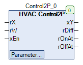

Control2P (FB)¶
FUNCTION_BLOCK Control2P
Kurzbeschreibung¶
2-Punkt-Regler mit Istwert / Sollwert / Freigabe und einstellbarer SchalthystereseDer Wirksinn ( invertiert / direkt ) ist ebenfalls einstellbar.
Darstellung¶

Schnittstellen¶
Eingänge¶
Name Datentyp Wertebereich Initialwert Funktion rX REAL Analoger Istwert rW REAL Analoger Sollwert xEn BOOL
FALSE: Regler gesperrt TRUE: Regler freigegeben
Ausgänge¶
Name Datentyp Wertebereich Initialwert Funktion xY BOOL Digitales Ausgangssignal rDiff REAL Regelabweichung ( rX - rW ) rOnAt REAL Absoluter Einschaltpunkt ( rW + rSwitchOnPoint ) rOffAt REAL Absoluter Ausschaltpunkt ( rW + rSwitchOffPoint )
Sollwerte / Parameter¶
Name Datentyp Wertebereich Initialwert Funktion rSwitchOffPoint REAL 0.5 Ausschaltpunkt relativ zum Sollwert rW rSwitchOnPoint REAL -0.5 Einschaltpunkt relativ zum Sollwert rW xOffCondition BOOL FALSE Zustand vom Ausgang xY bei xEn = 0 xInitValue BOOL FALSE Zustand vom Ausgang xY nach einem Neustart eAction eControlMode eControlMode.Inverted Wirksinnn des Reglers ( Invertiert = Heizen, Direkt = Kühlen ) eManModeB eManBin eManBin.Auto Betriebsart für das digitale Ausgangssignal xY
Funktionsbeschreibung¶
Freigabe-Eingang xEn¶
xEn Regelprozess xY rDiff rOnAt rOffAt Hinweise TRUE TRUE X X x x Freigabe der Regelung FALSE FALSE xOffCondition ( falls eManModeB = eManBin.Auto ) X x x Sperrung der Regelung
Legende: X = beliebig
Digital-Ausgang xY¶
Der digitale Ausgang xY wird durch den Freigabe-Eingang xEn, den Regelprozess und das Handübersteuermodul beeinflusst.
Regelprozess xEn eManModeB xY Hinweise FALSE TRUE eManBin.Auto FALSE Automatikbetrieb - Regelprozess = FALSE TRUE TRUE eManBin.Auto TRUE Automatikbetrieb - Regelprozess = TRUE X FALSE eManBin.Auto xOffCondition Automatikbetrieb ohne Freigabe X X eManBin.ManOff FALSE Handbetrieb - Aus X X eManBin.ManOn TRUE Handbetrieb - Ein
Legende: X = beliebig
Regelprozess¶
Der Regler kann in zwei unterschiedlichen Betriebsarten ( eAction = eControlMode.Inverted oder eAction = eControlMode.Direct ) betrieben werden.
Dabei gelten folgende Regeln:
eAction Regel eControlMode.Inverted rSwitchOnPoint < rSwitchOffPoint eControlMode.Direct rSwitchOnPoint > rSwitchOffPoint
Unterschreitet in der Betriebsart eControlMode.Inverted der rSwitchOffPoint den rSwitchOnPoint, so wird der rSwitchOffPoint gegenüber dem
rSwitchOnPoint um 0.1 überhöht.
Unterschreitet in der Betriebsart eControlMode.Inverted der rSwitchOnPoint den rSwitchOffPoint, so wird der rSwitchOffPoint gegenüber dem
rSwitchOnPoint um 0.1 verringert.
Die Ausgangsgrößen rDiff ( rX - rW ), absoluter Einschaltpunkt rOnAt ( rW + rSwitchOnPoint ) und absoluter Ausschaltpunkt
rOffAt ( rW + rSwitchOffPoint ) stehen unabhängig vom Freigabe-Eingang xEn immer zu Verfügung.
xEn eAction rDiff xY Hinweise TRUE eControlMode.Inverted < rSwitchOnPoint TRUE Automatikbetrieb - Invertiert Ein TRUE eControlMode.Inverted > rSwitchOffPoint FALSE Automatikbetrieb - Invertiert Aus TRUE eControlMode.Direct > rSwitchOnPoint TRUE Automatikbetrieb - Direkt Ein TRUE eControlMode.Direct < rSwitchOffPoint FALSE Automatikbetrieb - Direkt Aus
Legende: X = beliebig
Zusammengefasst läßt sich der Regelprozess alternativ wie folgt beschreiben:
xEn eAction rX xY Hinweise TRUE eControlMode.Inverted < rOnAt TRUE Automatikbetrieb - Invertiert Ein TRUE eControlMode.Inverted > rOffAt FALSE Automatikbetrieb - Invertiert Aus TRUE eControlMode.Direct > rOnAt TRUE Automatikbetrieb - Direkt Ein TRUE eControlMode.Direct < rOffAt FALSE Automatikbetrieb - Direkt Aus
Legende: X = beliebig
Visualisierung¶
Information¶
Element Autoren Datum Version Anmerkungen Funktion Adam Bartod 04.2016 1.0 Ursprungsversion Programmierung Adam Bartod 04.2016 1.0 Ursprungsversion Test Jochen Reu 02.2017 1.0 Ursprungsversion Dokumentation Jochen Reu 10.2017 1.0 Ursprungsversion
Codesys¶
- InOut:
Scope Name Type Initial Comment Input rX REAL Analoger Istwert rW REAL Analoger Sollwert xEn BOOL Freigabe des Reglers rSwitchOffPoint REAL 0.5 Ausschaltpunkt relativ zum Sollwert rW rSwitchOnPoint REAL -0.5 Einschaltpunkt relativ zum Sollwert rW xOffCondition BOOL FALSE Zustand vom Ausgang xY bei xEn = 0 xInitValue BOOL FALSE Zustand vom Ausgang xY nach einem Neustart eAction eControlMode eControlMode.Inverted Wirksinnn des Reglers ( Invertiert = Heizen, Direkt = Kühlen ) eManModeB eManBin eManBin.Auto Betriebsart für das digitale Ausgangssignal xY Output xY BOOL Binäres Stellsignal für die Regelung rDiff REAL Regelabweichung_Xw rOnAt REAL Einschaltpunkt_bei rOffAt REAL Ausschaltpunkt_bei